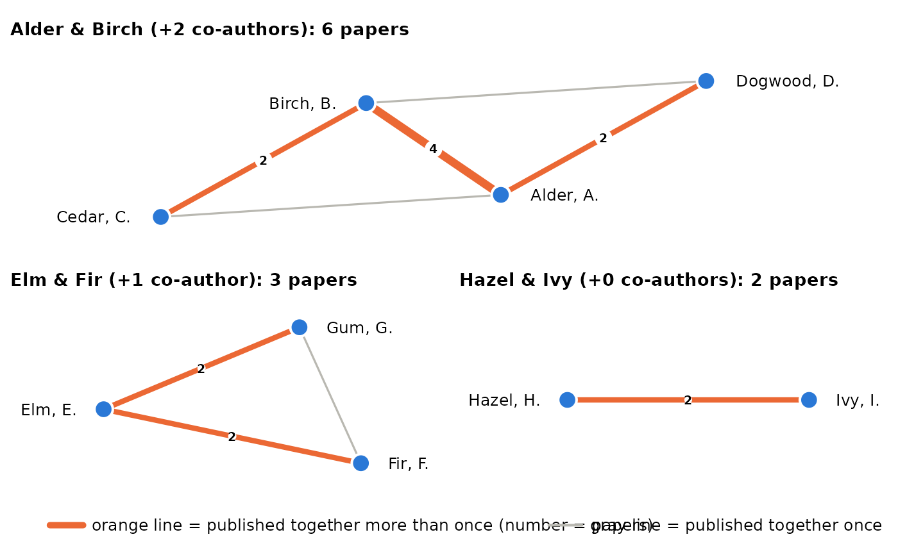

Builds a weighted co-authorship network from a data frame of papers (authors are the nodes, and there is an edge for every pair of authors who share a paper, weighted by the number of shared papers) and computes statistics for each author and for the network as a whole.
Usage
author_network(
data,
authors = "authors",
cites = "cited_by",
title = "title",
sep = "\\s+and\\s+",
seed = 1,
min_component_papers = 1,
dedupe = TRUE,
dedupe_max_dist = 0.08
)Arguments
- data
A data frame with one row per paper, such as the result of [scholar_parse_html()] or [bib_to_df()].
Name of the column holding the author string, for example `"Barrick, M. R. and Mount, M. K."`. If there is no `authors` column but there is an `author` column (as from [bib_to_df()]), that one is used.
- cites
Name of the column with citation counts. Missing values count as 0, and a missing column means every paper has 0.
- title
Name of the column with titles. Rows with no title are dropped.
- sep
Regular expression separating authors. Default `"\s+and\s+"`.
- seed
Random seed for community detection (Louvain is stochastic).
- min_component_papers
Drop every cluster of connected authors that is supported by fewer than this many papers. The default `1` keeps everything; `2` removes clusters that come from a single paper (including single-author papers). The filter is applied before any statistics are computed, so all metrics, communities and component IDs describe the filtered network.
- dedupe
Remove duplicate listings of the same paper before building the network (see [find_duplicate_papers()]). Default `TRUE`: the less-cited copy of each duplicated paper is dropped, a message says which, and the rows removed are kept in `$duplicates`. Use `FALSE` to keep every row.
- dedupe_max_dist
Title edit-distance tolerance for the duplicate check, as a share of title length. Default 0.08.
Value
An object of class `citelens_network`, a list with:
- graph
The igraph object, with node attributes.
- nodes
Data frame, one row per author: `n_papers`, `total_citations` (full credit for each paper), `degree` (distinct co-authors), `strength` (sum of edge weights), `betweenness`, `closeness` (within the author's component), `eigenvector`, `component`, `community`. Sorted by `strength`, then `betweenness`.
- edges
Data frame of author pairs with `weight` (shared papers).
- summary
One-row data frame of network-level statistics.
- communities
Data frame summarising each Louvain community.
- components
One row per connected component: `component` id (as drawn on the plots), `n_authors`, `n_papers`, `total_citations`, `authors`, and the most-cited paper in it (`top_paper`).
- duplicates
Rows dropped as duplicate listings, or `NULL`.
Details
Requires the igraph package, which is listed under Suggests.
Because every paper's author list forms a clique, a collection of unrelated papers produces many small disconnected components. Betweenness is non-zero only for authors who bridge others *within* a component. Communities are found with Louvain on the edge weights. When the network is mostly disconnected, communities coincide with components and `modularity` is trivially close to 1; interpret them accordingly.
Google Scholar shortens long author lists with "...", so the authors at the end of a long list are missing from [scholar_parse_html()] results, and collaborations involving them are not seen.
See also
[plot.citelens_network()], [plot_cluster()], [plot_clusters()], [cluster_maps()], [find_duplicate_papers()]
Examples
if (requireNamespace("igraph", quietly = TRUE)) {
f <- system.file("extdata", "sample_authors.csv", package = "citelens")
papers <- read.csv(f, stringsAsFactors = FALSE)
net <- author_network(papers)
net
net$components
plot(net)
}
#> Dropped 1 duplicate paper listing(s): row 7. Use dedupe = FALSE to keep them; see $duplicates.
